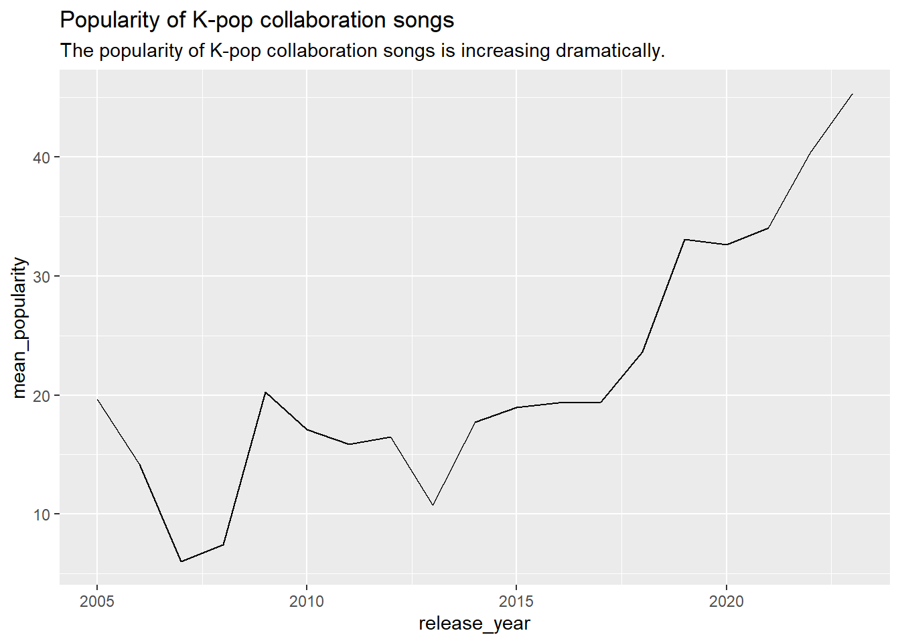
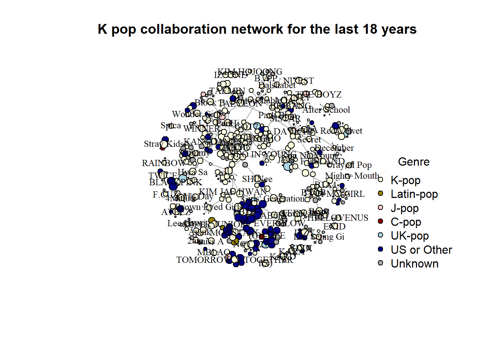
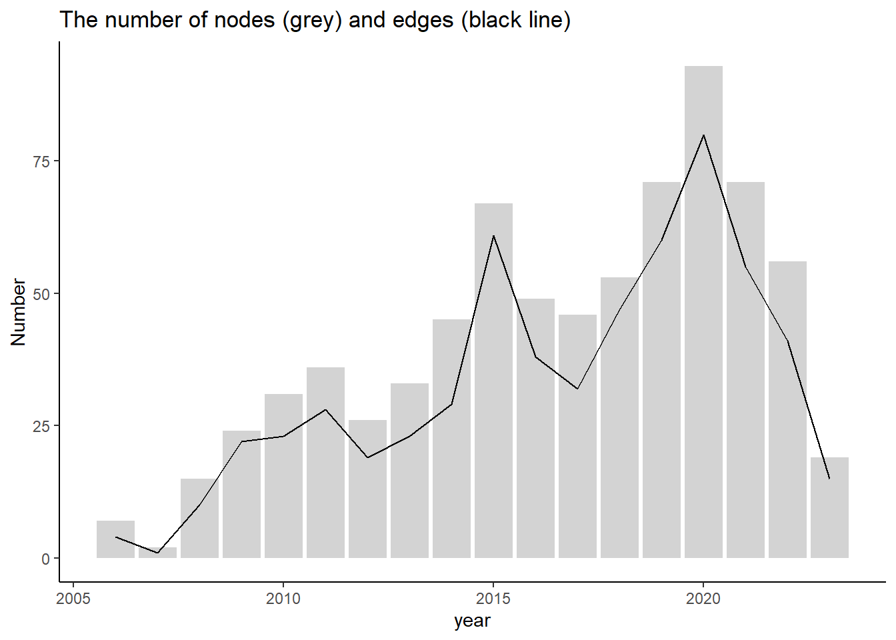
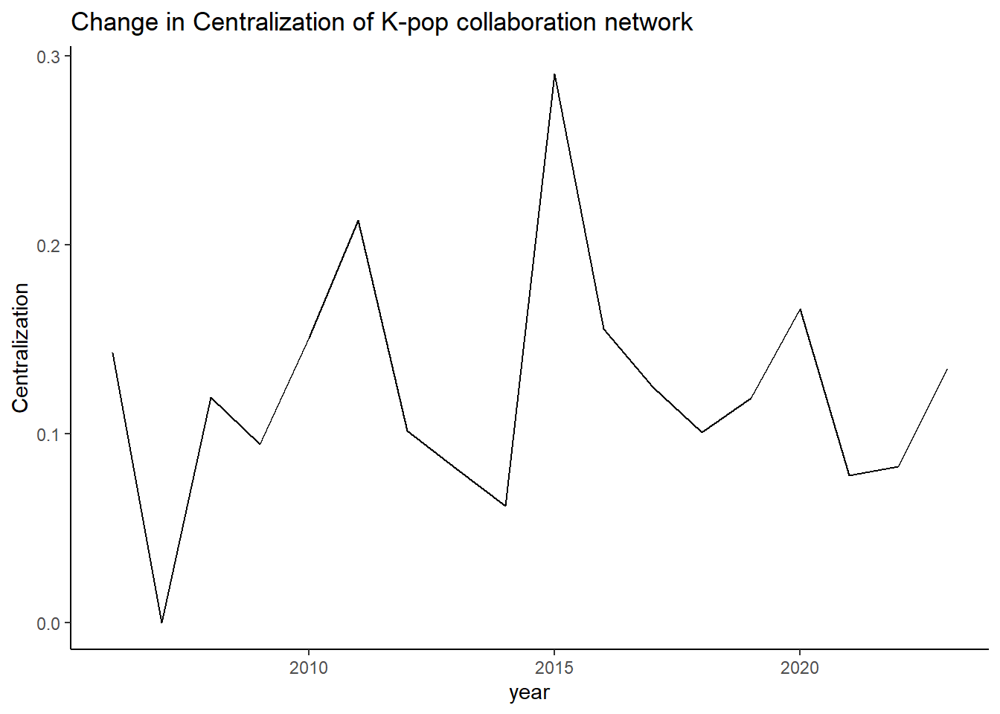
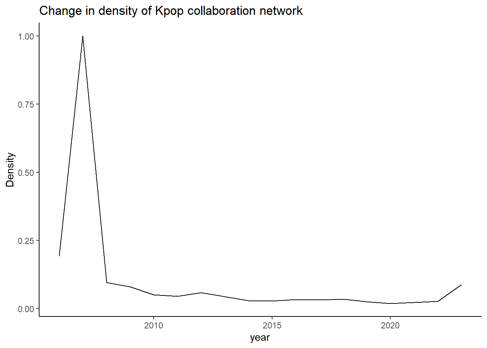

The phenomenon of K-pop has recently emerged as a prominent cultural force, gaining significant attention and popularity not only in South Korea and other Asian nations but globally as well, particularly among the younger generation. An interesting aspect of K-pop is that many K-pop artists collaborate with other artists, often those who are not based in South Korea. In this analysis, my objective is to delve into the dynamics of such collaborations within the K-pop industry and beyond, across various musical genres, and to investigate how these collaborative patterns have evolved over time. To achieve this goal, I aim to examine the social network of K-pop collaborations, with a view to gaining a better understanding of the underlying trends and structures shaping this phenomenon.
Collect the data
I collected the data in a following way.
collab_songs.csv:
This is a list of collaboration songs collected by
gathering the name of the top 50 Kpop artists in 2010, 2015, and 2020 by asking ChatGPT
manually collecting their Spotify artist id
collecting all the singles/albums data of the artists by using Spotify API and
removing the songs that are NOT collaborative by filtering out those who have only one artist registered
artist.csv:
This is a list of artists performed the collaboration songs collected by
extracting the unique artists from the collab_songs.csv
collecting their information (genre and followers) using Spotify API
song_detail.csv:
This is a list of songs with detail information prepared by
extracting the detailed song information (release year, available market etc) by using Spotify API based on the track id from kpop_collab.csv
Code
# install librarieslibrary(igraph)
Warning: package 'igraph' was built under R version 4.2.2
Attaching package: 'igraph'
The following objects are masked from 'package:stats':
decompose, spectrum
The following object is masked from 'package:base':
union
Code
library(dplyr)
Attaching package: 'dplyr'
The following objects are masked from 'package:igraph':
as_data_frame, groups, union
The following objects are masked from 'package:stats':
filter, lag
The following objects are masked from 'package:base':
intersect, setdiff, setequal, union
Code
library(readr)
Warning: package 'readr' was built under R version 4.2.2
Code
library(ggplot2)library(tidyr)
Attaching package: 'tidyr'
The following object is masked from 'package:igraph':
crossing
New names:
Rows: 452 Columns: 26
── Column specification
──────────────────────────────────────────────────────── Delimiter: "," chr
(25): song_name, name_10, kpop_artist_name, all_artists, song_id, song_a... dbl
(1): ...1
ℹ Use `spec()` to retrieve the full column specification for this data. ℹ
Specify the column types or set `show_col_types = FALSE` to quiet this message.
• `` -> `...1`
New names:
Rows: 509 Columns: 8
── Column specification
──────────────────────────────────────────────────────── Delimiter: "," chr
(4): name, id, genre, name_lower dbl (4): ...1, Unnamed: 0, top_kpop, followers
ℹ Use `spec()` to retrieve the full column specification for this data. ℹ
Specify the column types or set `show_col_types = FALSE` to quiet this message.
• `` -> `...1`
New names:
Rows: 452 Columns: 20
── Column specification
──────────────────────────────────────────────────────── Delimiter: "," chr
(11): album, artists, available_markets, external_ids, external_urls, h... dbl
(6): ...1, disc_number, duration_ms, popularity, track_number, release... lgl
(2): explicit, is_local date (1): release_date
ℹ Use `spec()` to retrieve the full column specification for this data. ℹ
Specify the column types or set `show_col_types = FALSE` to quiet this message.
• `` -> `...1`
Describe & Clean the data
collab_songs dataframe
collab_songs is a dataframe where each observation is a collaboration songs by Kpop top artists and other artists.
It has 452 rows (collaboration songs) and 26 columns.
Code
library(skimr)
Warning: package 'skimr' was built under R version 4.2.3
Code
# Skim the dataskim(collab_songs)
Data summary
Name
collab_songs
Number of rows
452
Number of columns
26
_______________________
Column type frequency:
character
25
numeric
1
________________________
Group variables
None
Variable type: character
skim_variable
n_missing
complete_rate
min
max
empty
n_unique
whitespace
song_name
0
1.00
1
79
0
447
0
name_10
0
1.00
1
10
0
426
0
kpop_artist_name
0
1.00
2
19
0
79
0
all_artists
0
1.00
7
91
0
418
0
song_id
0
1.00
22
22
0
452
0
song_api_info
0
1.00
543
2229
0
419
0
artist_id
0
1.00
22
22
0
79
0
all_artists_id
0
1.00
46
190
0
419
0
all_artists_list
0
1.00
7
105
0
389
0
all_artists_id_list
0
1.00
27
189
0
391
0
artist_1
0
1.00
2
36
0
339
0
artist_id_1
0
1.00
22
22
0
342
0
artist_2
271
0.40
2
19
0
110
0
artist_id_2
271
0.40
22
22
0
110
0
artist_3
389
0.14
3
21
0
50
0
artist_id_3
389
0.14
22
22
0
50
0
artist_4
442
0.02
4
19
0
10
0
artist_id_4
442
0.02
22
22
0
10
0
artist_5
445
0.02
5
17
0
6
0
artist_id_5
445
0.02
22
22
0
6
0
artist_6
449
0.01
9
12
0
3
0
artist_id_6
449
0.01
22
22
0
3
0
artist_7
449
0.01
7
17
0
3
0
artist_id_7
449
0.01
22
22
0
3
0
name_5
0
1.00
1
5
0
386
0
Variable type: numeric
skim_variable
n_missing
complete_rate
mean
sd
p0
p25
p50
p75
p100
hist
…1
0
1
4342.56
2374.34
0
2227.5
4300
6122.5
8390
▃▇▇▅▆
Code
summary(collab_songs)
...1 song_name name_10 kpop_artist_name
Min. : 0 Length:452 Length:452 Length:452
1st Qu.:2228 Class :character Class :character Class :character
Median :4300 Mode :character Mode :character Mode :character
Mean :4343
3rd Qu.:6122
Max. :8390
all_artists song_id song_api_info artist_id
Length:452 Length:452 Length:452 Length:452
Class :character Class :character Class :character Class :character
Mode :character Mode :character Mode :character Mode :character
all_artists_id all_artists_list all_artists_id_list artist_1
Length:452 Length:452 Length:452 Length:452
Class :character Class :character Class :character Class :character
Mode :character Mode :character Mode :character Mode :character
artist_id_1 artist_2 artist_id_2 artist_3
Length:452 Length:452 Length:452 Length:452
Class :character Class :character Class :character Class :character
Mode :character Mode :character Mode :character Mode :character
artist_id_3 artist_4 artist_id_4 artist_5
Length:452 Length:452 Length:452 Length:452
Class :character Class :character Class :character Class :character
Mode :character Mode :character Mode :character Mode :character
artist_id_5 artist_6 artist_id_6 artist_7
Length:452 Length:452 Length:452 Length:452
Class :character Class :character Class :character Class :character
Mode :character Mode :character Mode :character Mode :character
artist_id_7 name_5
Length:452 Length:452
Class :character Class :character
Mode :character Mode :character
I removed unnecessary columns. Now collab_songs has following columns.
song_name
song_id: this can be used as a key when joining with song_detail dataframe
kpop_artist_name: This is a name of the Kpop top artists.
artist_id: This is a Spotify Artist ID of the Kpop top artists. This can be used as a key when joining with artist dataframe
artist_[i]: This is a name of the artists that collaborated with Kpop top artists or the Kpop top artists themselves, which means that it might duplicate with kpop_artist_name (i is a number from 1 to 7)
artist_id_[i]: This is a Spotify Artist ID of the artists that collaborated with Kpop top artists or the Kpop top artists themselves, which means that it might duplicate with artist_id (i is a number from 1 to 7). This can be used as a key when joining with artists dataframe.
# A tibble: 452 × 4
song_name kpop_…¹ artis…² artis…³
<chr> <chr> <chr> <chr>
1 #GirlsSpkOut TAEYEON CHANMI… <NA>
2 0X1=LOVESONG (I Know I Love You) - Japanese Ver. TOMORR… Lilas … <NA>
3 0X1=LOVESONG (I Know I Love You) feat. MOD SUN TOMORR… MOD SUN <NA>
4 1, 2 LeeHi 최현석 <NA>
5 1, 2, 3 BTOB SEO EU… LEE CH…
6 2 Baddies - Biicla Remix NCT 127 Biicla <NA>
7 2 Baddies - No Identity Remix NCT 127 No Ide… <NA>
8 2 Baddies - Viann Remix NCT 127 Viann <NA>
9 4 Times CHANGMO YUMDDA CHANGMO
10 A Brand New Day (BTS World Original Soundtrack) [Pt.… BTS Zara L… <NA>
# … with 442 more rows, and abbreviated variable names ¹kpop_artist_name,
# ²artist_1, ³artist_2
artists is a dataframe where each row represents an artist (individual/group) that have participated in Kpop collaboration songs by top Kpop artists.
id: This is a Spotify Artist ID of the artist. It can be used as a key when joining with collab_songs dataframe
name: the name of the artist
top_kpop: if the artist is one of the top 50 Kpop artists in 2010, 2015, or 2020, the value is 1. Otherwise, the value is 0.
genre: the genre of the artist (can be multiple)
followers: the number of the followers on Spotify
Code
skim(artists)
Data summary
Name
artists
Number of rows
509
Number of columns
8
_______________________
Column type frequency:
character
4
numeric
4
________________________
Group variables
None
Variable type: character
skim_variable
n_missing
complete_rate
min
max
empty
n_unique
whitespace
name
0
1
2
36
0
509
0
id
0
1
22
22
0
509
0
genre
0
1
2
152
0
140
0
name_lower
0
1
2
36
0
509
0
Variable type: numeric
skim_variable
n_missing
complete_rate
mean
sd
p0
p25
p50
p75
p100
hist
…1
0
1
257.86
148.77
0
130
258
386
516
▇▇▇▇▇
Unnamed: 0
0
1
556.40
335.10
0
257
559
839
1168
▇▆▆▇▆
top_kpop
0
1
0.16
0.36
0
0
0
0
1
▇▁▁▁▂
followers
0
1
1751729.65
7466285.35
0
815
39237
565467
110756302
▇▁▁▁▁
Code
summary(artists)
...1 Unnamed: 0 name id
Min. : 0.0 Min. : 0.0 Length:509 Length:509
1st Qu.:130.0 1st Qu.: 257.0 Class :character Class :character
Median :258.0 Median : 559.0 Mode :character Mode :character
Mean :257.9 Mean : 556.4
3rd Qu.:386.0 3rd Qu.: 839.0
Max. :516.0 Max. :1168.0
top_kpop genre followers name_lower
Min. :0.0000 Length:509 Min. : 0 Length:509
1st Qu.:0.0000 Class :character 1st Qu.: 815 Class :character
Median :0.0000 Mode :character Median : 39237 Mode :character
Mean :0.1552 Mean : 1751730
3rd Qu.:0.0000 3rd Qu.: 565467
Max. :1.0000 Max. :110756302
# Clean data by removing unnecessary columnsartists <- artists %>%select(-c('...1'))artists <- artists %>%select(-c('Unnamed: 0'))artists <- artists %>%relocate(id, .before = name)
Code
# This is the list of the genre names that appear in artist dataframeartists %>%select(genre) %>%separate_rows(genre, sep =",\\s*") %>%mutate(genre =gsub("\\[|'|\\]", "", genre)) %>%count(genre, sort =TRUE)
I want to add two new columns to the artist dataFrame. The first column would indicate the broader genre of each artist, such as K-pop, Latin-pop, or J-pop (Japanese pop), which would help us to better understand the overall geographical market. The second column would simply indicate whether each artist is K-pop or not.
First, I decided to classify the overall genre by detecting the follwoing word in the genre column
K-pop: “korean”, “k-” (for example k-pop, k-rap). Also any artists whose column “to-=p-kpop” is 1 are considered as K-pop genre.
song_detail is a dataframe where each observation is a collaboration song by K-pop top artists and other artists. While collab_songs provides the information of the artists that worked on the song, this dataframe provides more detailed information about the songs themselves such as duration, track number, release date etc…
It has 452 rows (collaboration songs), which is the same as the number of the rows of collab_songs, and 20 columns.
Code
skim(song_detail)
Data summary
Name
song_detail
Number of rows
452
Number of columns
20
_______________________
Column type frequency:
character
11
Date
1
logical
2
numeric
6
________________________
Group variables
None
Variable type: character
skim_variable
n_missing
complete_rate
min
max
empty
n_unique
whitespace
album
0
1.00
1041
2754
0
337
0
artists
0
1.00
543
2229
0
419
0
available_markets
0
1.00
6
1104
0
34
0
external_ids
0
1.00
24
24
0
447
0
external_urls
0
1.00
68
68
0
452
0
href
0
1.00
56
56
0
452
0
id
0
1.00
22
22
0
452
0
name
0
1.00
1
79
0
447
0
preview_url
29
0.94
107
107
0
415
0
type
0
1.00
5
5
0
1
0
uri
0
1.00
36
36
0
452
0
Variable type: Date
skim_variable
n_missing
complete_rate
min
max
median
n_unique
release_date
0
1
2005-12-05
2023-03-17
2017-08-26
317
Variable type: logical
skim_variable
n_missing
complete_rate
mean
count
explicit
0
1
0.06
FAL: 424, TRU: 28
is_local
0
1
0.00
FAL: 452
Variable type: numeric
skim_variable
n_missing
complete_rate
mean
sd
p0
p25
p50
p75
p100
hist
…1
0
1
225.50
130.63
0
112.75
225.5
338.25
451
▇▇▇▇▇
disc_number
0
1
1.00
0.00
1
1.00
1.0
1.00
1
▁▁▇▁▁
duration_ms
0
1
215094.02
39306.63
5889
195108.00
213231.0
234115.00
441184
▁▁▇▁▁
popularity
0
1
25.09
18.64
0
9.00
24.0
37.00
86
▇▇▃▂▁
track_number
0
1
2.23
1.70
1
1.00
1.0
3.00
9
▇▂▁▁▁
release_year
0
1
2016.56
4.19
2005
2014.00
2017.0
2020.00
2023
▁▃▅▇▇
Code
summary(song_detail)
...1 album artists available_markets
Min. : 0.0 Length:452 Length:452 Length:452
1st Qu.:112.8 Class :character Class :character Class :character
Median :225.5 Mode :character Mode :character Mode :character
Mean :225.5
3rd Qu.:338.2
Max. :451.0
disc_number duration_ms explicit external_ids
Min. :1 Min. : 5889 Mode :logical Length:452
1st Qu.:1 1st Qu.:195108 FALSE:424 Class :character
Median :1 Median :213231 TRUE :28 Mode :character
Mean :1 Mean :215094
3rd Qu.:1 3rd Qu.:234115
Max. :1 Max. :441184
external_urls href id is_local
Length:452 Length:452 Length:452 Mode :logical
Class :character Class :character Class :character FALSE:452
Mode :character Mode :character Mode :character
name popularity preview_url track_number
Length:452 Min. : 0.00 Length:452 Min. :1.000
Class :character 1st Qu.: 9.00 Class :character 1st Qu.:1.000
Mode :character Median :24.00 Mode :character Median :1.000
Mean :25.09 Mean :2.235
3rd Qu.:37.00 3rd Qu.:3.000
Max. :86.00 Max. :9.000
type uri release_date release_year
Length:452 Length:452 Min. :2005-12-05 Min. :2005
Class :character Class :character 1st Qu.:2014-06-20 1st Qu.:2014
Mode :character Mode :character Median :2017-08-26 Median :2017
Mean :2017-02-11 Mean :2017
3rd Qu.:2020-07-13 3rd Qu.:2020
Max. :2023-03-17 Max. :2023
The columns are as follows
name: name of the songs
popularity: the popularity index from Spotify
release_year
album: this is information about the album the song is from in Json format.
artists: this is information about the artists in Json format
available_markets
explicit
id: This is a Spotify song id. Can be used as a key when joining with collab_songs
# A tibble: 452 × 8
name popul…¹ relea…² album artists avail…³ expli…⁴ id
<chr> <dbl> <int> <chr> <chr> <chr> <lgl> <chr>
1 Show Me Your Love 28 2005 {'al… [{'ext… ['AR',… FALSE 2z3h…
2 I Wanna Hold You 14 2005 {'al… [{'ext… ['AR',… FALSE 2A7W…
3 I'm Your Man 17 2005 {'al… [{'ext… ['AR',… FALSE 2MYG…
4 Forever With U (Feat. Pa… 37 2006 {'al… [{'ext… ['AR',… FALSE 7czV…
5 HOLD THE LINE (Feat. 조P… 12 2006 {'al… [{'ext… ['AR',… FALSE 5KgZ…
6 오늘은 그대와 하늘위로 (… 1 2006 {'al… [{'ext… ['AR',… FALSE 4Yyt…
7 FAR AWAY (Feat. MC몽) 3 2006 {'al… [{'ext… ['AR',… FALSE 6HvV…
8 Anystar 18 2006 {'al… [{'ext… ['AR',… FALSE 3gJz…
9 오아시스 (feat. 이재훈) 6 2007 {'al… [{'ext… ['AR',… FALSE 56iR…
10 Love Action (feat.Jo-PD) 8 2008 {'al… [{'ext… ['AR',… FALSE 2IgM…
# … with 442 more rows, and abbreviated variable names ¹popularity,
# ²release_year, ³available_markets, ⁴explicit
Extra data cleaning
collab_songs include unofficial songs by unofficial accounts. For example, there are a few songs by After School and Blackpink. However, if you look at the Spotify album page, this “Blackpink” is different from “BLACK PINK”. There seem to be several cases that the artist ID is not the correct one. So I removed the songs that are not by “official” (=with more monthly followers) accounts.
Code
#For example, there are a few songs by After School and Blackpink. However, if you look at the Spotify album page, this "Blackpink" is different from "BLACK PINK". collab_songs %>%filter(artist_1 =="Blackpink")
How many K-pop collaboration songs are released by year?
Code
collab_songs %>%left_join(song_detail, by =c("song_id"="id")) %>%ggplot(aes(x=release_year)) +geom_bar() +scale_x_continuous(breaks=seq(2010, 2022, 5)) +xlim(2009, 2023) +labs(title ="The number of K-pop collaboration songs", subtitle ="The number of collaboration songs by K-pop top artists is increasing over the time", caption ="Note that this data is based on the information of only top 50 k-pop artists during 2010-2020")
Scale for 'x' is already present. Adding another scale for 'x', which will
replace the existing scale.
Is the popularity of K-pop collaboration songs increasing?
Code
song_detail %>%group_by(release_year) %>%summarize(mean_popularity =mean(popularity)) %>%ggplot(aes(x=release_year, y=mean_popularity)) +geom_line() +labs(title ="Popularity of K-pop collaboration songs", subtitle ="The popularity of K-pop collaboration songs is increasing dramatically.")

Convert this data to network data
To analyze this data in a perspective of social network, I need to convert this data into an edgelist where from_nodes are K-pop top artists, to_nodes are artists who collaborated with them, and edges are songs.
Code
# pivot_longeredgelist <- collab_songs %>%pivot_longer(cols =starts_with("artist_id_"),names_to ="variable",values_to ="to_artist_id" )%>%filter(!is.na(to_artist_id)) %>%# Remove the rows where the to_artist_id is blank filter(artist_id != to_artist_id) %>%# Remove the rows where from_artist and to_artist are the same select(c("artist_id", "to_artist_id", "song_id", "song_name"))colnames(edgelist) <-c("From", "To", "song_id", "song_name")edgelist
# A tibble: 591 × 4
From To song_id song_n…¹
<chr> <chr> <chr> <chr>
1 2AfmfGFbe0A0WsTYm0SDTx 1zNqDE7qDGCsyzJwohVaoX 3szFx3SyWFpRbehaPxpyqq Expecta…
2 2AfmfGFbe0A0WsTYm0SDTx 2pHkxVNynHBwQHhGaoBIXX 3szFx3SyWFpRbehaPxpyqq Expecta…
3 2AfmfGFbe0A0WsTYm0SDTx 77AiFEVeAVj2ORpC85QVJs 6HXVUmiqWSg3OW6yr5mJCJ Nxde (S…
4 2AfmfGFbe0A0WsTYm0SDTx 6cEuCEZu7PAE9ZSzLLc2oQ 4y2SshixeFlqPprLmoZtJe TOMBOY …
5 2AfmfGFbe0A0WsTYm0SDTx 73jBynjsVtofjRpdpRAJGk 6sUnwJgPUTHKBKnsKZr9PC HWAA - …
6 2AfmfGFbe0A0WsTYm0SDTx 4gOc8TsQed9eqnqJct2c5v 6juLaduD4STCUDWT0AYun4 MORE
7 2AfmfGFbe0A0WsTYm0SDTx 2kRfqPViCqYdSGhYSM9R0Q 6juLaduD4STCUDWT0AYun4 MORE
8 2AfmfGFbe0A0WsTYm0SDTx 6fs2or0cKLEM2xohWq8SoX 6juLaduD4STCUDWT0AYun4 MORE
9 2AfmfGFbe0A0WsTYm0SDTx 0tRFWXqKBBQcu5oFVOgVzX 6juLaduD4STCUDWT0AYun4 MORE
10 2AfmfGFbe0A0WsTYm0SDTx 4TqlcgMFDryY96KWcvrhTv 6juLaduD4STCUDWT0AYun4 MORE
# … with 581 more rows, and abbreviated variable name ¹song_name
plot(collab.net, vertex.label =V(collab.net)$show_kpop_top,arrow.mode="-",vertex.size =log(V(collab.net)$followers) *0.5,vertex.label.cex = .8,vertex.label.color ="black",vertex.label.dist =0,frame.width =0,color =V(collab.net)$color_region_category,main ="K pop collaboration network for the last 18 years",ref ="The size of the circles means the popularity" )legend("bottomright",legend =c("K-pop", "Latin-pop", "J-pop", "C-pop", "UK-pop", "US or Other", "Unknown"),pt.bg =c("#FFFFE1", "#99860C", "#FDCCCC", "#920002", "#ABD7E6", "#010087", "darkgrey"),pch =21,cex =1,bty ="n",title ="Genre" )

Overview: How the collaboration patterns have changed over time?
Between 2006 and 2010, the number of collaboration songs among K-pop artists was limited, with few international collaborations with artists outside of South Korea. Additionally, the network was sparse and disconnected.
From 2011 to 2015, the number of collaboration songs slightly increased, with more international collaborations and a more connected network.
Between 2016 and 2020, K-pop experienced significant growth in terms of the number and types of collaborations. Notably, BTS, G(I)DLE, and Blackpink have a large number of international collaboration songs.
In 2021, the number of collaboration songs is not as large as that of 2016-2020 due to the shorter time span, but the proportion of international collaborations appears to be higher.
# Split the edgelist dataframe into 4 groups based on "period"edgelist_list <-split(edgelist, edgelist$period)# convert each element of the list into a separate dataframegraphs <-list()for (i inseq_along(edgelist_list)) {assign(paste0("edgelist_", names(edgelist_list)[i]), edgelist_list[[i]]) unique_vertices <-unique(c(edgelist_list[[i]]$From, edgelist_list[[i]]$To)) artists_period <- artists[artists$id %in% unique_vertices, ]# Create the graph from the filtered edgelist and vertices graph <-graph_from_data_frame(edgelist_list[[i]], directed =FALSE, vertices = artists_period)# Append the graph to the list of graphs graphs[[i]] <- graph}
Closer look: How does the network change every year?
Code
# Make a graph for each yeargraph_from_data_frame_with_all_vertices <-function(df, vertices) {# Create a data frame with all possible edges between vertices unique_vertices <-unique(c(df$From, df$To)) artists_period <- artists[artists$id %in% unique_vertices, ]# Create the graph with all vertices and existing edges graph <-graph_from_data_frame(df, directed =FALSE, vertices = artists_period)return(graph)}graphs_year <-lapply(2006:2023, function(x) graph_from_data_frame_with_all_vertices(df = edgelist[edgelist$release_year == x, ], vertices = artists))
Code
# Make a dataframe of graph statistics# Initialize the data framegraph_stats <-data.frame(release_year =2006:2023, num_nodes =numeric(length(2006:2023)), num_edges =numeric(length(2006:2023)), centralization =numeric(length(2006:2023)), density =numeric(length(2006:2023)), transitivity =numeric(length(2006:2023)) )# Loop through each year and calculate the desired graph statisticsfor (i in1:length(graphs_year)) { graph <- graphs_year[[i]]# Fill in the corresponding row of the data frame with the calculated statistics graph_stats[i, "num_nodes"] <-vcount(graph) graph_stats[i, "num_edges"] <-ecount(graph) graph_stats[i, "centralization"] <-centr_degree(graph)$centralization graph_stats[i, "density"] <-graph.density(graph) graph_stats[i, "transitivity"] <-transitivity(graph)}# Print the resulting data frameprint(graph_stats)
# Create a plot with a bar chart and a line chartggplot(graph_stats, aes(x = release_year)) +geom_bar(aes(y = num_nodes), stat ="identity", fill="lightgrey") +geom_line(aes(y = num_edges, group =1, fill ="black")) +labs(y ="Number", x ="year", title ="The number of nodes (grey) and edges (black line)") +theme_classic()
Warning: Ignoring unknown aesthetics: fill

Code
# Create a plot with a bar chart and a line chartggplot(graph_stats, aes(x = release_year)) +#geom_bar(aes(y = density, stat = "identity", fill="lightgrey")) +geom_line(aes(y = centralization, group =1, fill ="black")) +labs(y ="Centralization", x ="year", title ="Change in Centralization of K-pop collaboration network") +theme_classic()
Warning: Ignoring unknown aesthetics: fill

Code
# Create a plot with a bar chart and a line chartggplot(graph_stats, aes(x = release_year)) +#geom_bar(aes(y = density, stat = "identity", fill="lightgrey")) +geom_line(aes(y = density, group =1, fill ="black")) +labs(y ="Density", x ="year", title ="Change in density of Kpop collaboration network") +theme_classic()
Warning: Ignoring unknown aesthetics: fill

Artist-based analysis: Who is the center of K-pop network?
# Make a node stat dataframenodes_stat <-data.frame(genre =V(collab.net)$genre,followers =V(collab.net)$followers,region_category =V(collab.net)$region_category,kpop =V(collab.net)$kpop,degree =degree(collab.net) )
Here are the artists that have had most degree (≒ collaboration songs).
degree
CHANGMO 44
ZICO 40
BTS 29
BTOB 22
Gummy 22
(G)I-DLE 19
DAVICHI 19
KANGDANIEL 18
IU 17
Kim Na Young 17
Untouchable 17
Jessi 15
OH MY GIRL 15
MONSTA X 13
T-ARA 13
NCT 127 12
December 11
Red Velvet 10
TAEYEON 10
After School 9
LeeHi 9
Paul Blanco 9
SISTAR 9
AKMU 8
Hwa Sa 8
J.Y. Park 8
Park Bom 8
SEO IN YOUNG 8
B.A.P 7
Block B 7
KIM JAE HWAN 7
Spica 7
AB6IX 6
Beast 6
BIGBANG 6
Brown Eyed Girls 6
Lee Seung Gi 6
SUPER JUNIOR 6
TOMORROW X TOGETHER 6
ATEEZ 5
B1A4 5
Girls' Generation 5
ITZY 5
Loco 5
MINO 5
SHINee 5
TAEMIN 5
Wonder Girls 5
YUMDDA 5
4Minute 4
Dok2 4
f(x) 4
KARA 4
Lee Hyori 4
PENOMECO 4
Stray Kids 4
The Quiett 4
WINNER 4
Zion.T 4
AOA 3
BLACKPINK 3
Crush 3
Dalshabet 3
Gaeko 3
HYOLYN 3
K/DA 3
KARD 3
Keem Hyo-Eun 3
KIM HOJOONG 3
Mad Clown 3
MC MONG 3
NU'EST 3
Paloalto 3
SUGA 3
SUPERBEE 3
TVXQ! 3
TWICE 3
Verbal Jint 3
2am 2
2NE1 2
Apink 2
Babylon 2
Beenzino 2
BIBI 2
BOYFRIEND 2
Crayon Pop 2
Don Mills 2
F.CUZ 2
FTISLAND 2
G.NA 2
GIRIBOY 2
Hash Swan 2
ILLSON 2
IZ*ONE 2
Jay Park 2
JUNG ILHOON 2
Jung Kook 2
K.Will 2
Kang Seungwon 2
KOONTA 2
LAY 2
LEE CHANGSUB 2
LEE MINHYUK (HUTA) 2
Lim Hyunsik 2
Mighty Mouth 2
miss A 2
ONEW 2
ONF 2
PARK WOO JIN 2
Rain 2
RAINBOW 2
Sandara Park 2
SEO EUNKWANG 2
Sik-K 2
Son Dam Bi 2
Song Ji Eun 2
SUNMI 2
VIXX 2
Yoon Do Hyun 2
365LIT 1
aespa 1
ASH ISLAND 1
B-Free 1
B.I 1
Basick 1
Bizniz 1
BOBBY 1
Bobby Kim 1
Boi B 1
ChaMane 1
Chancellor 1
CHEETAH 1
Clon 1
DEAN 1
Demicat 1
DINDIN 1
DJ Wegun 1
DPR LIVE 1
Dynamicduo 1
EVERGLOW 1
EXID 1
FIESTAR 1
G-DRAGON 1
G2 1
GD&TOP 1
Girl's Day 1
Golden Child 1
GOT7 1
GSoul 1
Hanhae 1
HEIZE 1
HELLOVENUS 1
HIGH4 1
Hitchhiker 1
Huh Gak 1
Hwanhee 1
HYNN 1
J-Cera 1
Ja Mezz 1
JAMIE 1
Jessica 1
JONGHYUN 1
JooHyun Oak 1
Jun Hyo Seong 1
Junggigo 1
JUNGKEY 1
Jvcki Wai 1
KAI 1
Kanto 1
KCM 1
Kim Jin Pyo 1
Kim Jong Kook 1
Kim MinSeok 1
Kim Yeon Woo 1
Kingston Rudieska 1
KYUHYUN 1
Lee Jin Ah 1
Lee Sang Soon 1
Lee Seung Chul 1
Lee Sun Hee 1
lIlBOI 1
Lovelyz 1
MBLAQ 1
MeloMance 1
Microdot 1
Monday Kiz 1
myunDo 1
nafla 1
NARSHA 1
northfacegawd 1
Nuol 1
OHHYUK 1
Omega Sapien 1
Onestar 1
Orange Caramel 1
P-Type 1
Park Hwayobi 1
pH-1 1
Ra.D 1
Raiden 1
RM 1
Rothy 1
RYEOWOOK 1
Sam Kim 1
San E 1
Secret 1
SG Wannabe 1
Simon Dominic 1
Slom 1
Sojeong 1
SONG YUVIN 1
SOYOU 1
Stella Jang 1
SUMIN 1
Sung Si Kyung 1
SURAN 1
Tablo 1
TAEYANG 1
TAEYONG 1
TEEN TOP 1
THE BOYZ 1
The One 1
Uneducated Kid 1
VICTON 1
WENDY 1
Whee In 1
WOOGIE 1
Yang Da Il 1
Yang Hee Eun 1
Yang Yoseob 1
YEZI 1
YooA 1
YOOK SUNGJAE 1
Yuna 1
ZENE THE ZILLA 1
Zoorumpug 1
Discussion
How do I interpret the density and centrality?
Transitivity doesn’t work
Artist based analysis (# of degree)
Source Code
---title: "Assignment Kpop Collaboration Network"author: "Erika Nagai"date: "03/28/2023"format: html: toc: true code-fold: true code-copy: true code-tools: true# editor: visual---# OverviewThe phenomenon of K-pop has recently emerged as a prominent cultural force, gaining significant attention and popularity not only in South Korea and other Asian nations but globally as well, particularly among the younger generation. An interesting aspect of K-pop is that many K-pop artists collaborate with other artists, often those who are not based in South Korea. In this analysis, my objective is to delve into the dynamics of such collaborations within the K-pop industry and beyond, across various musical genres, and to investigate how these collaborative patterns have evolved over time. To achieve this goal, I aim to examine the social network of K-pop collaborations, with a view to gaining a better understanding of the underlying trends and structures shaping this phenomenon.# Collect the dataI collected the data in a following way.**collab_songs.csv:**This is a list of collaboration songs collected by1. gathering the name of the top 50 Kpop artists in 2010, 2015, and 2020 by asking ChatGPT2. manually collecting their Spotify artist id3. collecting all the singles/albums data of the artists by using Spotify API and4. removing the songs that are NOT collaborative by filtering out those who have only one artist registered**artist.csv:**This is a list of artists performed the collaboration songs collected by1. extracting the unique artists from the collab_songs.csv2. collecting their information (genre and followers) using Spotify API**song_detail.csv:**This is a list of songs with detail information prepared by1. extracting the detailed song information (release year, available market etc) by using Spotify API based on the track id from kpop_collab.csv```{r}# install librarieslibrary(igraph)library(dplyr)library(readr)library(ggplot2)library(tidyr)``````{r}# Read in datagetwd()collab_songs <-read_csv("_data/Kpop_collaboration_Erika_Nagai/collab_songs.csv")artists <-read_csv("_data/Kpop_collaboration_Erika_Nagai/artists.csv")song_detail <-read_csv("_data/Kpop_collaboration_Erika_Nagai/song_detail.csv")```# Describe & Clean the data### `collab_songs` dataframe`collab_songs` is a dataframe where each observation is a collaboration songs by Kpop top artists and other artists.It has 452 rows (collaboration songs) and 26 columns.```{r}library(skimr)# Skim the dataskim(collab_songs)summary(collab_songs)```I removed unnecessary columns. Now `collab_songs` has following columns.- song_name- song_id: this can be used as a key when joining with `song_detail` dataframe- kpop_artist_name: This is a name of the Kpop top artists.- artist_id: This is a Spotify Artist ID of the Kpop top artists. This can be used as a key when joining with `artist` dataframe- artist\_\[i\]: This is a name of the artists that collaborated with Kpop top artists or the Kpop top artists themselves, which means that it might duplicate with `kpop_artist_name` (i is a number from 1 to 7)- artist_id\_\[i\]: This is a Spotify Artist ID of the artists that collaborated with Kpop top artists or the Kpop top artists themselves, which means that it might duplicate with `artist_id` (i is a number from 1 to 7). This can be used as a key when joining with `artists` dataframe.```{r}collab_songs <- collab_songs %>%select(c("song_name", "song_id", "kpop_artist_name", "artist_id", "artist_1", "artist_id_1", "artist_2", "artist_id_2", "artist_3", "artist_id_3", "artist_4", "artist_id_4", "artist_5", "artist_id_5", "artist_6", "artist_id_6", "artist_7", "artist_id_7"))collab_songs``````{r}collab_songs %>%arrange(song_name, kpop_artist_name, artist_1, artist_2) %>%select(c("song_name", "kpop_artist_name", "artist_1", "artist_2"))``````{r}collab_songs %>%filter(artist_1 =="Blackpink")```### Artists (artist.csv)`artists` is a dataframe where each row represents an artist (individual/group) that have participated in Kpop collaboration songs by top Kpop artists.1. id: This is a Spotify Artist ID of the artist. It can be used as a key when joining with `collab_songs` dataframe2. name: the name of the artist3. top_kpop: if the artist is one of the top 50 Kpop artists in 2010, 2015, or 2020, the value is 1. Otherwise, the value is 0.4. genre: the genre of the artist (can be multiple)5. followers: the number of the followers on Spotify```{r}skim(artists)summary(artists)artists````name` has 513 unique values and `id` has 517 unique values, which may mean that there are `name` values that are duplicated or missing id information.```{r}artists %>%arrange(name)``````{r}# Clean data by removing unnecessary columnsartists <- artists %>%select(-c('...1'))artists <- artists %>%select(-c('Unnamed: 0'))artists <- artists %>%relocate(id, .before = name)``````{r}# This is the list of the genre names that appear in artist dataframeartists %>%select(genre) %>%separate_rows(genre, sep =",\\s*") %>%mutate(genre =gsub("\\[|'|\\]", "", genre)) %>%count(genre, sort =TRUE)```I want to add two new columns to the `artist` dataFrame. The first column would indicate the broader genre of each artist, such as K-pop, Latin-pop, or J-pop (Japanese pop), which would help us to better understand the overall geographical market. The second column would simply indicate whether each artist is K-pop or not.First, I decided to classify the overall genre by detecting the follwoing word in the `genre` column**K-pop:** "korean", "k-" (for example k-pop, k-rap). Also any artists whose column "to-=p-kpop" is 1 are considered as K-pop genre.**Latin-pop:** "latin", "latino", "chicano"**J-pop (Japanese pop):** "japanese", "j-" (for example j-pop, j-rap, j-core), "visual-kei"**C-pop (Chinese pop):** "chinese"**UK-pop:** "uk" (uk-pop, uk-hiphop)**US or Others:** artists whose genre doesn't include the above words but has any word**Unknown:** artists whose genre is empty```{r}artists <- artists %>%mutate(region_category=case_when(grepl("k-pop|korean|k-rap", genre) | top_kpop ==1~"K-pop",grepl("latin|latino|chicano|bachata", genre) ~"Latin-pop",grepl("j-pop|j-rap|japanese|j-core|josei|visual-kei", genre) ~"J-pop",grepl("chinese", genre) ~"C-pop",grepl("uk-|uk ", genre) ~"UK-pop",grepl("\\[\\]", genre) ~"Unknown",TRUE~"Other" )) %>%mutate(kpop =case_when( region_category =="K-pop"~"yes",TRUE~"no" ))artists``````{r}artists <- artists %>%mutate(show_kpop_top =case_when( top_kpop ==1~ name,TRUE~"" ) )```### song_detail (song_detail.csv)`song_detail` is a dataframe where each observation is a collaboration song by K-pop top artists and other artists. While `collab_songs` provides the information of the artists that worked on the song, this dataframe provides more detailed information about the songs themselves such as duration, track number, release date etc...It has 452 rows (collaboration songs), which is the same as the number of the rows of `collab_songs`, and 20 columns.```{r}skim(song_detail)summary(song_detail)```The columns are as follows1. name: name of the songs2. popularity: the popularity index from Spotify3. release_year4. album: this is information about the album the song is from in Json format.5. artists: this is information about the artists in Json format6. available_markets7. explicit8. id: This is a Spotify song id. Can be used as a key when joining with `collab_songs````{r}# I will remove unnecessary columnssong_detail <- song_detail %>%relocate(name,popularity, release_date, release_year, .before="album") %>%select(-c("...1", "disc_number", "duration_ms", "external_ids", "external_urls","href", "is_local", "preview_url", "track_number", "type", "uri", "release_date"))song_detail$release_year <-as.integer(song_detail$release_year)song_detail %>%arrange(release_year)```## Extra data cleaning`collab_songs` include unofficial songs by unofficial accounts. For example, there are a few songs by After School and Blackpink. However, if you look at the Spotify album page, this "Blackpink" is different from "BLACK PINK". There seem to be several cases that the artist ID is not the correct one. So I removed the songs that are not by "official" (=with more monthly followers) accounts.```{r}#For example, there are a few songs by After School and Blackpink. However, if you look at the Spotify album page, this "Blackpink" is different from "BLACK PINK". collab_songs %>%filter(artist_1 =="Blackpink")``````{r}# Remove the songs by artist_1 whose id doesn't existcollab_songs <- collab_songs %>%left_join(artists, by =c("artist_id_1"="id")) %>%filter(!is.na(name)) %>%select(-c("name", "top_kpop", "genre", "followers", "name_lower", "region_category", "kpop"))# Remove the songs by artist_2 whose id doesn't exist collab_songs <- collab_songs %>%left_join(artists, by =c("artist_id_2"="id")) %>%filter(is.na(artist_2)|!is.na(name)) %>%select(-c("name", "top_kpop", "genre", "followers", "name_lower", "region_category", "kpop"))# Remove the songs by artist_3 whose id doesn't exist collab_songs <- collab_songs %>%left_join(artists, by =c("artist_id_3"="id")) %>%filter(is.na(artist_3)|!is.na(name)) %>%select(-c("name", "top_kpop", "genre", "followers", "name_lower", "region_category", "kpop"))# Remove the songs by artist_4 whose id doesn't exist collab_songs <- collab_songs %>%left_join(artists, by =c("artist_id_4"="id")) %>%filter(is.na(artist_4)|!is.na(name)) %>%select(-c("name", "top_kpop", "genre", "followers", "name_lower", "region_category", "kpop"))# Remove the songs by artist_5 whose id doesn't exist collab_songs <- collab_songs %>%left_join(artists, by =c("artist_id_5"="id")) %>%filter(is.na(artist_5)|!is.na(name)) %>%select(-c("name", "top_kpop", "genre", "followers", "name_lower", "region_category", "kpop"))# Remove the songs by artist_6 whose id doesn't exist collab_songs <- collab_songs %>%left_join(artists, by =c("artist_id_6"="id")) %>%filter(is.na(artist_6)|!is.na(name)) %>%select(-c("name", "top_kpop", "genre", "followers", "name_lower", "region_category", "kpop"))# Remove the songs by artist_7 whose id doesn't exist collab_songs <- collab_songs %>%left_join(artists, by =c("artist_id_7"="id")) %>%filter(is.na(artist_7)|!is.na(name)) %>%select(-c("name", "top_kpop", "genre", "followers", "name_lower", "region_category", "kpop"))collab_songs```Now `collab_songs` has 441 songs (reduced from 452)# Exploring the data### How many K-pop collaboration songs are released by year?```{r}collab_songs %>%left_join(song_detail, by =c("song_id"="id")) %>%ggplot(aes(x=release_year)) +geom_bar() +scale_x_continuous(breaks=seq(2010, 2022, 5)) +xlim(2009, 2023) +labs(title ="The number of K-pop collaboration songs", subtitle ="The number of collaboration songs by K-pop top artists is increasing over the time", caption ="Note that this data is based on the information of only top 50 k-pop artists during 2010-2020")```### Is the popularity of K-pop collaboration songs increasing?```{r}song_detail %>%group_by(release_year) %>%summarize(mean_popularity =mean(popularity)) %>%ggplot(aes(x=release_year, y=mean_popularity)) +geom_line() +labs(title ="Popularity of K-pop collaboration songs", subtitle ="The popularity of K-pop collaboration songs is increasing dramatically.")```# Convert this data to network dataTo analyze this data in a perspective of social network, I need to convert this data into an edgelist where from_nodes are K-pop top artists, to_nodes are artists who collaborated with them, and edges are songs.```{r}# pivot_longeredgelist <- collab_songs %>%pivot_longer(cols =starts_with("artist_id_"),names_to ="variable",values_to ="to_artist_id" )%>%filter(!is.na(to_artist_id)) %>%# Remove the rows where the to_artist_id is blank filter(artist_id != to_artist_id) %>%# Remove the rows where from_artist and to_artist are the same select(c("artist_id", "to_artist_id", "song_id", "song_name"))colnames(edgelist) <-c("From", "To", "song_id", "song_name")edgelist```## Edgelist (without spliting)```{r}collab.net <- igraph::graph_from_data_frame(edgelist, directed =FALSE, vertices = artists)``````{r}# Setting the attributes# # For visualization# ## colorartists <- artists %>%mutate(color_region_category =case_when( region_category =="K-pop"~"#FFFFE1", region_category =="Latin-pop"~"#99860C", region_category =="J-pop"~"#FDCCCC", region_category =="C-pop"~"#920002", region_category =="UK-pop"~"#ABD7E6", region_category =="Other"~"#010087",TRUE~"darkgrey" ),color_kpop =case_when( kpop =="yes"~"#FFFFE1",TRUE~"#010087" ))V(collab.net)$color <- artists$color_region_category# # # V(collab.net)$name_kpop_top <- artists$show_name_kpop_top# V(collab.net)$name_followers <- artists$show_name_followers``````{r}# Check attributessummary(collab.net) #509 nodes and 591 edgesigraph::vertex_attr_names(collab.net)igraph::edge_attr_names(collab.net)```# Overview of K-pop collaboration network```{r}plot(collab.net, vertex.label =V(collab.net)$show_kpop_top,arrow.mode="-",vertex.size =log(V(collab.net)$followers) *0.5,vertex.label.cex = .8,vertex.label.color ="black",vertex.label.dist =0,frame.width =0,color =V(collab.net)$color_region_category,main ="K pop collaboration network for the last 18 years",ref ="The size of the circles means the popularity" )legend("bottomright",legend =c("K-pop", "Latin-pop", "J-pop", "C-pop", "UK-pop", "US or Other", "Unknown"),pt.bg =c("#FFFFE1", "#99860C", "#FDCCCC", "#920002", "#ABD7E6", "#010087", "darkgrey"),pch =21,cex =1,bty ="n",title ="Genre" )```# Overview: How the collaboration patterns have changed over time?1. Between 2006 and 2010, the number of collaboration songs among K-pop artists was limited, with few international collaborations with artists outside of South Korea. Additionally, the network was sparse and disconnected.2. From 2011 to 2015, the number of collaboration songs slightly increased, with more international collaborations and a more connected network.3. Between 2016 and 2020, K-pop experienced significant growth in terms of the number and types of collaborations. Notably, BTS, G(I)DLE, and Blackpink have a large number of international collaboration songs.4. In 2021, the number of collaboration songs is not as large as that of 2016-2020 due to the shorter time span, but the proportion of international collaborations appears to be higher.```{r}edgelist <- edgelist %>%left_join(song_detail, by =c("song_id"="id")) %>%mutate(period =case_when( release_year <=2010~"2005-2010", release_year >2010& release_year <=2015~"2011-2015", release_year >2015& release_year <=2020~"2016-2020",TRUE~"2021-" ) ) %>%select(c("From", "To", "song_id", "release_year", "period", "name", "popularity"))#E(collab.net)$period <- edgelist$period``````{r}# Split the edgelist dataframe into 4 groups based on "period"edgelist_list <-split(edgelist, edgelist$period)# convert each element of the list into a separate dataframegraphs <-list()for (i inseq_along(edgelist_list)) {assign(paste0("edgelist_", names(edgelist_list)[i]), edgelist_list[[i]]) unique_vertices <-unique(c(edgelist_list[[i]]$From, edgelist_list[[i]]$To)) artists_period <- artists[artists$id %in% unique_vertices, ]# Create the graph from the filtered edgelist and vertices graph <-graph_from_data_frame(edgelist_list[[i]], directed =FALSE, vertices = artists_period)# Append the graph to the list of graphs graphs[[i]] <- graph} ``````{r}# Assigining visualization attributesperiods <-c("2006-2010", "2011-2015", "2016-2020", "2021-")for (i in1:length(graphs)) {V(graphs[[i]])$color <-V(graphs[[i]])$color_region_categoryplot(graphs[[i]], vertex.label =V(graphs[[i]])$show_kpop_top,arrow.mode="-",vertex.size =log(V(graphs[[i]])$followers) *0.7,vertex.label.cex = .8,vertex.label.color ="black",vertex.label.dist =0,frame.width =0,color =V(graphs[[i]])$color_region_category,main =paste0("Collaboration by K-pop top artists", periods[[i]]) )legend("bottomright",legend =c("K-pop", "Latin-pop", "J-pop", "C-pop", "UK-pop", "US or Other", "Unknown"),pt.bg =c("#FFFFE1", "#99860C", "#FDCCCC", "#920002", "#ABD7E6", "#010087", "darkgrey"),pch =21,cex =1,bty ="n",title ="Genre" )}```# Closer look: How does the network change every year?```{r}# Make a graph for each yeargraph_from_data_frame_with_all_vertices <-function(df, vertices) {# Create a data frame with all possible edges between vertices unique_vertices <-unique(c(df$From, df$To)) artists_period <- artists[artists$id %in% unique_vertices, ]# Create the graph with all vertices and existing edges graph <-graph_from_data_frame(df, directed =FALSE, vertices = artists_period)return(graph)}graphs_year <-lapply(2006:2023, function(x) graph_from_data_frame_with_all_vertices(df = edgelist[edgelist$release_year == x, ], vertices = artists))``````{r}# Make a dataframe of graph statistics# Initialize the data framegraph_stats <-data.frame(release_year =2006:2023, num_nodes =numeric(length(2006:2023)), num_edges =numeric(length(2006:2023)), centralization =numeric(length(2006:2023)), density =numeric(length(2006:2023)), transitivity =numeric(length(2006:2023)) )# Loop through each year and calculate the desired graph statisticsfor (i in1:length(graphs_year)) { graph <- graphs_year[[i]]# Fill in the corresponding row of the data frame with the calculated statistics graph_stats[i, "num_nodes"] <-vcount(graph) graph_stats[i, "num_edges"] <-ecount(graph) graph_stats[i, "centralization"] <-centr_degree(graph)$centralization graph_stats[i, "density"] <-graph.density(graph) graph_stats[i, "transitivity"] <-transitivity(graph)}# Print the resulting data frameprint(graph_stats)```## Number of nodes and edges```{r}# Create a plot with a bar chart and a line chartggplot(graph_stats, aes(x = release_year)) +geom_bar(aes(y = num_nodes), stat ="identity", fill="lightgrey") +geom_line(aes(y = num_edges, group =1, fill ="black")) +labs(y ="Number", x ="year", title ="The number of nodes (grey) and edges (black line)") +theme_classic()``````{r}# Create a plot with a bar chart and a line chartggplot(graph_stats, aes(x = release_year)) +#geom_bar(aes(y = density, stat = "identity", fill="lightgrey")) +geom_line(aes(y = centralization, group =1, fill ="black")) +labs(y ="Centralization", x ="year", title ="Change in Centralization of K-pop collaboration network") +theme_classic()``````{r}# Create a plot with a bar chart and a line chartggplot(graph_stats, aes(x = release_year)) +#geom_bar(aes(y = density, stat = "identity", fill="lightgrey")) +geom_line(aes(y = density, group =1, fill ="black")) +labs(y ="Density", x ="year", title ="Change in density of Kpop collaboration network") +theme_classic()```# Artist-based analysis: Who is the center of K-pop network?```{r}igraph::vertex_attr_names(collab.net)``````{r}# Make a node stat dataframenodes_stat <-data.frame(genre =V(collab.net)$genre,followers =V(collab.net)$followers,region_category =V(collab.net)$region_category,kpop =V(collab.net)$kpop,degree =degree(collab.net) )```Here are the artists that have had most degree (≒ collaboration songs).```{r}nodes_stat %>%filter(kpop =="yes") %>%arrange(desc(degree)) %>%select(degree)```# DiscussionHow do I interpret the density and centrality?Transitivity doesn't workArtist based analysis (# of degree)